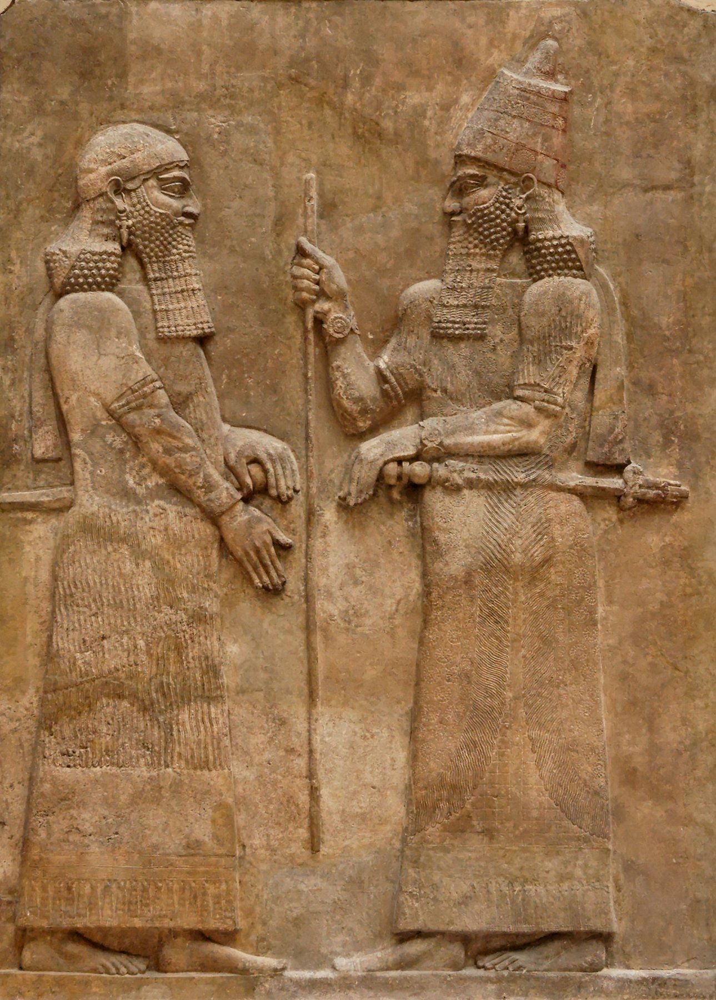

Sargon II and Dignitary Relief

- Find Name
- Sargon II and Dignitary Relief
- Description
- A gypsum alabaster wall relief, about 3.30 meters high, from facade L of the palace of Sargon II (722-705 BC) at Dur-Sharrukin (Khorsabad), excavated by Paul-Emile Botta in 1843-1844 and now in the Louvre (AO 19873-74). It shows Sargon, recognizable by his truncated-cone royal headdress, holding the staff of kingship as he welcomes a high official - identified by the Louvre as possibly Sennacherib, the crown prince, and by some as his marshal, the tartan.
- Historical Period
- Iron Age II
- Evidence Class
- Contextual
- Interpretations
- The relief visualizes the Assyrian court at the height of Sargon's power, the generation that ended the northern kingdom. Its staff in the king's hand echoes Isaiah's image of Assyria as the 'rod' and 'staff' of God's anger, and Sargon is the one Assyrian king named in the Bible (Isaiah 20:1). The dignitary's identity - crown prince Sennacherib or the tartan - is not settled, and the relief should not be captioned as a portrait of either man without that qualification.
- Alternative Names
- Sargon II and a High Official
- Related Books
- Scripture Illuminated
- Biblical Significance
- It shows the king who destroyed Samaria and the court that sent the tartan to Ashdod, the only Assyrian king the Bible names, in the regalia of his office.
- Artifact Date
- c. 713-716 BC
- Current Location
- Louvre, Paris
- Date Discovered
- 1843-1844
- Discovery Location
- Khorsabad, Iraq (Dur-Sharrukin, palace of Sargon II)
- Timeline Era
- Divided Monarchy
Awaiting Review Not yet checked against scholarly sources. Treat its claims as provisional until this entry is reviewed. About verification
Last reviewed: not yet reviewed